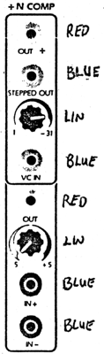
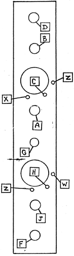

|

Divide by 'N' ComparatorParts for Kit
 Check out the operation of this module by applying the sawtooth wave from an oscillator to the IN- input on the comparator section. Listen to the Comparator OUT, and turn the Comparator Knob. From about the 12 o'clock position to about 5 o'clock, the control should vary the pulse width from zero to full. The sound will cut off below and above these positions. With the control set for a narrow pulse width (just above the 12 o'clock position), plug the output from a slowly varying Positive control voltage into the IN+ input of the Comparator. The pulse width should be controlled from minimum to maxi mum without cutting the sound off at either end of the VC control. Adjust the knob slightly if the sound cuts off at either extreme. Disconnect the VC from the IN+ and set the knob to about 2 o'clock. Monitor the OUT ÷. Turn the Divider control (top knob) fully CCW. Turn the oscillator frequency up to a fairly high pitch, and turn the Divider control up. The pitch will step through the sub-harmonic series. Turn the knob fully CCW again and apply a varying VC to the VC IN of the top section. Listen for voltage control of this division. Note that the setting of the comparator knob or VC of the Comparator section will control the pulse width at the output of the divider section. The STEPPED OUT is a staircase wave with the number of steps proportional to the division setting.
|